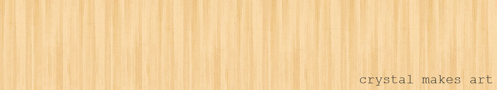
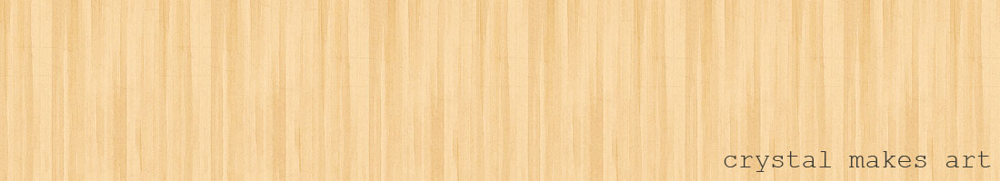
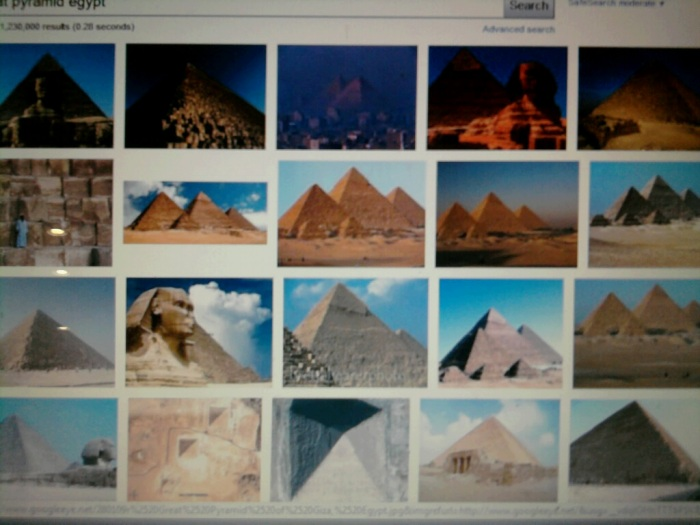
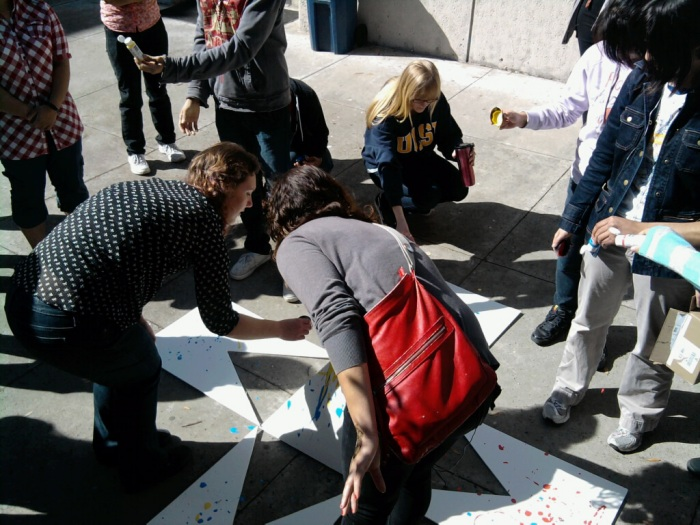
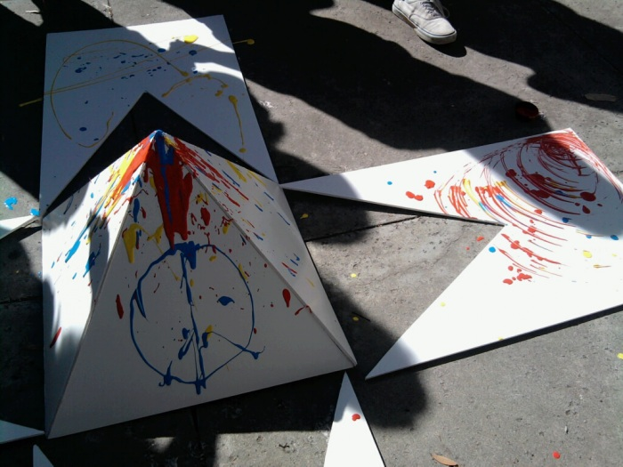
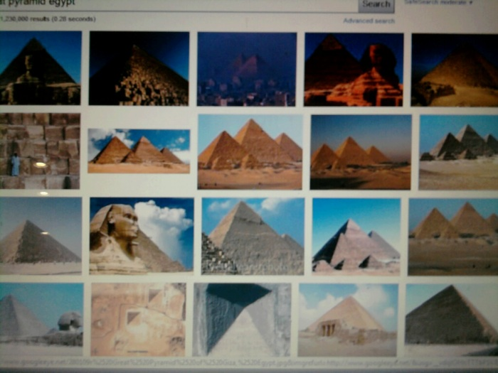
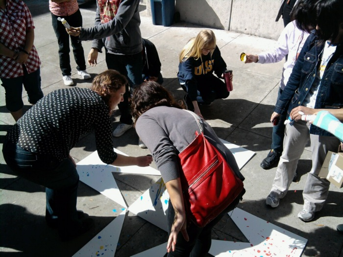
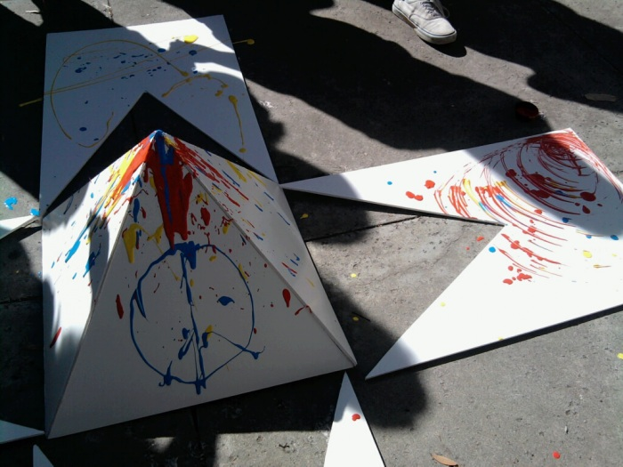

Concept: Concentrating on Cairo and the recent events in Egypt. The idea that the status quo (represented by the pyramid) can be changed (represented by colored paint). The cutouts represent the rupture of that status quo.
Materials: white posterboard, glue gun, paint, hemp string
Abstract:
The title of my piece is "By the People". In this project, I'm interested in the representation of cities and the ways that people influence those representations with their actions. Specifically, I'm looking at the city of Cairo, and how the recent Egyptian revolution has reworked the idea of Cairo, and of Egypt itself. I used white foamboard, hot glue, and string to make a pyramid (four equilateral triangles) laying the cutouts on their corresponding sides. The pyramid represents the way America, and indeed much of the Western world, saw Egypt as a harmless tourist destination (pre-revolution). The cutouts on the side represent the rupture of that representation, as the new Egypt bursts through the old. I will have paint on the side, for the audience to use on the piece. They will be instructed to paint, and can influence the piece however they wish. This audience interaction mirrors how the revolution was really a popular revolution, and was one that changed both the government structure as well as the way people think about Egypt. So, the pyramid itself represents status quo, the cutouts represent the rupture of that status quo, and the paint is the method in which that status quo was broken, ie through the actions of a city population. It's very important to this project that the audience interacts with the piece, and that I have vague instructions, because that mirrors the way in which the Egyptian Revolution began through the people, all with different ideas about what to fix (economic inequality, governmental corruption, etc).
 





{kind=link}
{kind=link}
{kind=link}